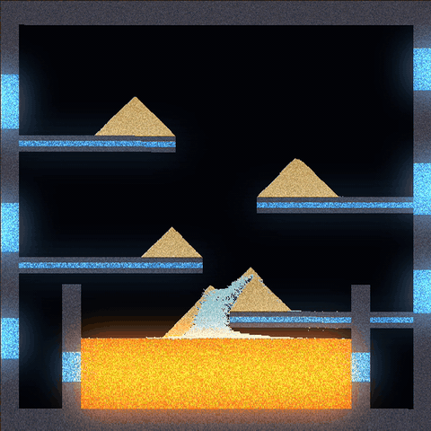
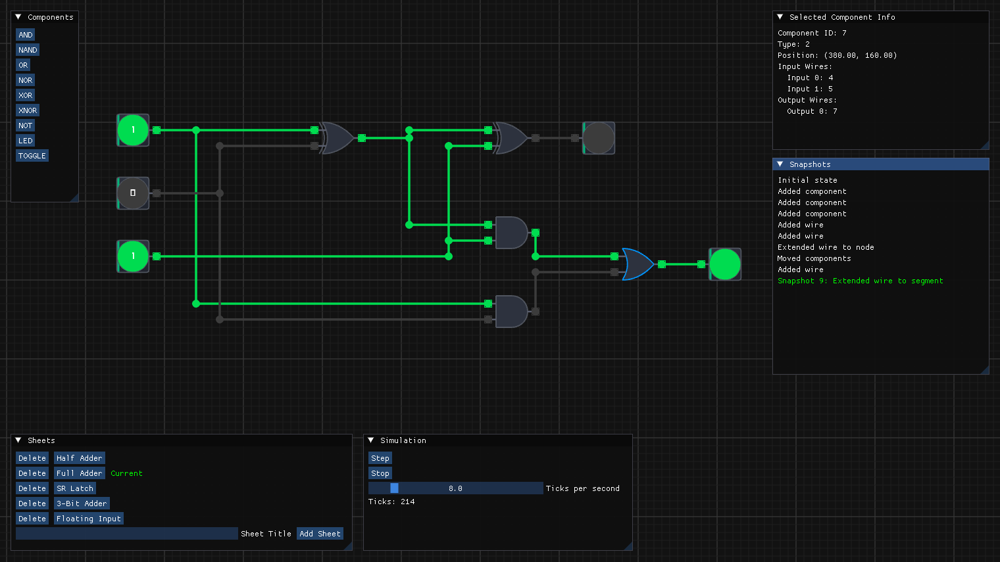
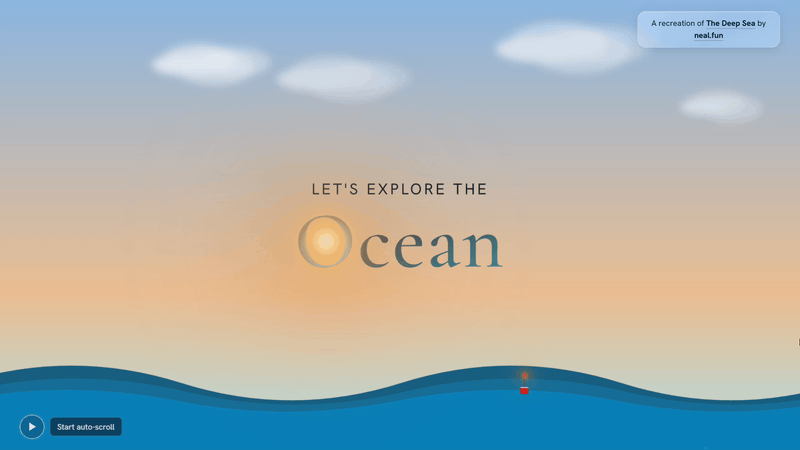

Computer engineering · Gebze Technical University
I build simulations and systems in C++.
Falling-sand physics, digital logic circuits, scroll-driven web experiments. I like understanding how things work deeply enough to rebuild them.
Projects
Scree
A falling-sand physics simulator in C++20 and raylib where every pixel is an independent particle which reacts with the materials around it. It runs in the browser via WebAssembly.
- 30+ materials that spread, burn and dissolve into one another through a tag based reaction system
- Materials, reactions and physics are defined in editable JSON, and everything can be hot reloaded
- You can create, edit and delete materials in-app
- You can import and export your own materials and canvases
- Bloom lighting for glowing materials
Tech stack
- C++20
- raylib
- Dear ImGui
- nlohmann/json
- CMake
- Catch2
- Emscripten/WASM

Latch
A logic-gate sandbox and simulator in C++20, raylib and Dear ImGui. You can place gates on an infinite grid, wire them together and simulate the circuit with one-tick propagation delay per gate.
- Three logic values: LOW, HIGH and UNDEFINED for floating inputs
- Nine basic gates: AND, OR, XOR and their complements, NOT, a toggle switch and an LED
- Wires are graphs of nodes and segments which react to node and segment deletion
- Wires auto-route when extended and reroute when a gate or group of gates is moved
- Build multiple circuits in the same instance through sheets with a shared component palette and clipboard
- Canvas selection, copy/paste, delete, and full undo/redo
- A headless simulation core inside its own static library tested with Catch2
Tech stack
- C++20
- raylib
- Dear ImGui
- CMake
- Catch2

The Deep Ocean
A case study on GSAP and scroll based animations where I recreate neal.fun's The Deep Sea

Background
- Degree
- BSc Computer Engineering, Gebze Technical University
- Started University
- September 2024
- Expected graduation date
- July 2028
- GPA
- 3.55
- Languages
- Arabic - Native, English - Fluent, Turkish - Conversational
Skills
Shipped with
Systems
- C++ 17/20
- Emscripten (C++ to web)
- raylib
- CMake
Web
- HTML
- CSS
- JS
- GSAP
- Lenis
Familiar with
- OpenGL
- React
- Node.js
- WordPress
- MongoDB
About Me
I am a third year computer student at Gebze Technical University. I like to deeply understand how things work, which often leads me to creating interactive simulations for them.
I always priortize system design. I structure my projects to be flexible and easy to extend as they grow not just making it work once
I mainly work in C++. I design my systems to be reliable, extendable and efficient. I keep data separate from the code. Instead of serializing state, I store it in a JSON format. This makes it easy for users to edit and for the program to read. In Scree this allowed to define and even generate new materials with AI, since the format is simple enough to describe. I will be using the same approach for Latch as well.
I also enjoy tinkering with interactive web technologies like GSAP, Lenis and Three.js to create sites that introduce new ways to interact with web pages such as scroll driven animations and interactions as well as 3D sites
Say Hello
Open to simulation, systems and interactive web work, or just chatting about interesting technologies.
moha.alaklouk@gmail.com